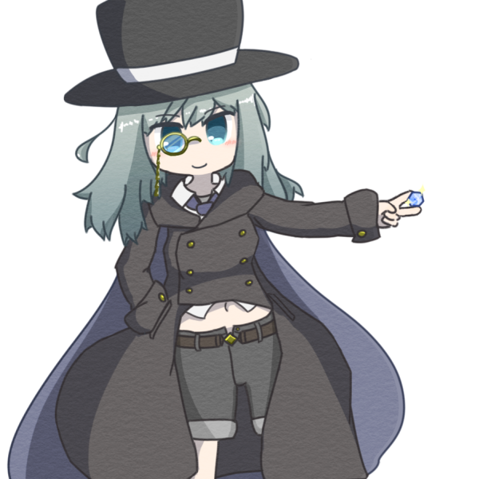

産出資源が殆ど石や鉱石類であり、
その加工術が極度に発展した国。
ラピサイトはここの出身。
だが、故に他の資材は国外に極端に頼っており、
不安定さなどが長年の課題だった。
事実、隣国がいざこざに巻き込まれた時は、
石の国も貧困に喘いだらしい。
ラピサイト・ストンスキ
名前：ラピサイト・ストンスキ『石の錬金術師』こと、ラピサイト・ストンスキ。
年齢：23
性別：女
身長：170cm
種族：人間
性格：おてんば
むね：人並みには
職業：錬金術師
好き：石、岩、鉱石など石類、テレス
嫌い：テレスに傷をつけるもの
出身：石の国
出演作品：IDEA CRAFTERs 2回目
石を自在に操る秘術を受け継いだ、
ストンスキ家の正統後継者である。
その実態は石狂いにして石マニア、石ファン、石オタク。
能力を究める過程において、鉱物、石、岩、などと、
石に通ずるものを熱烈に愛するようになってしまった、
何の変哲もある女。
全体をダークカラーにまとめ、
シルクハット、お腹の出るコートとインナー、
マントに、ホットパンツにモノクルをつけている。
心臓など、身体の一部が石に置き換わっている。
目指す先は全身を石と組み替える、ストーンゴーレムであった。
IDEA CRAFTERsにとってテレス・タレット（よその子）と出会い、
人として見てくれたことから好意を抱く。
恋人にはなっていないが、
彼の世界に、彼と、同じように彼が掬い上げた子と、
3人で歩んでいくことにした。
そうした歴史を重ねていくうちに、
突如発現した『能力』。
はじめはたまたま、石を木材に変化させた。
それが石の錬金術師の一代目だ。
これも、代を重ねていくうちに一般化されていき、
素質の調べ方や、能力の鍛錬の仕方が確立されていった。
だがしかし、『誕生』だけは未だに謎に包まれている。
故に、石の国の生まれの者は、みな若いうちに試験を受ける。
素質があると判断されたものは、ほぼ強制的に錬金術師とされる。
それに見合った賃金に加え、家族にも保証がある。
……なお、錬金術師の子供が、素質があるかというと、
特にそういうわけでもないらしい。
石の錬金術師が、中途に組み替えるもの。
自らの心臓を石製に置き換えることで、
石との同調を加速させ、より高次の術に至るとされている。
ラピサイトは今この段階であり、
同時に元に戻す手段をテレス・タレットと探す道を歩む。
被造物にして、創造神の領域とされる。
歴代において、ここに至った者は存在しない。
全身を自らが作り出した石に置き換え、
石と完全に同調、
非常に豊かである石資源を万物に組み替えられる……とされる。
馴染みのある錬金術の用語で言えば、まさしく『賢者の石』だ。
{kind=link}
{kind=link}
{kind=link}